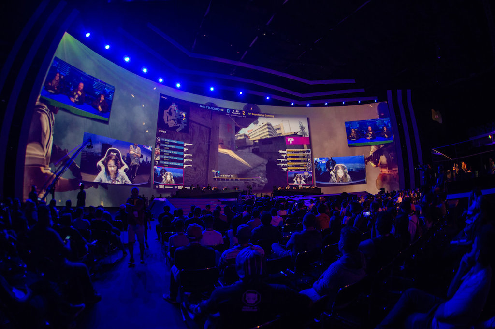
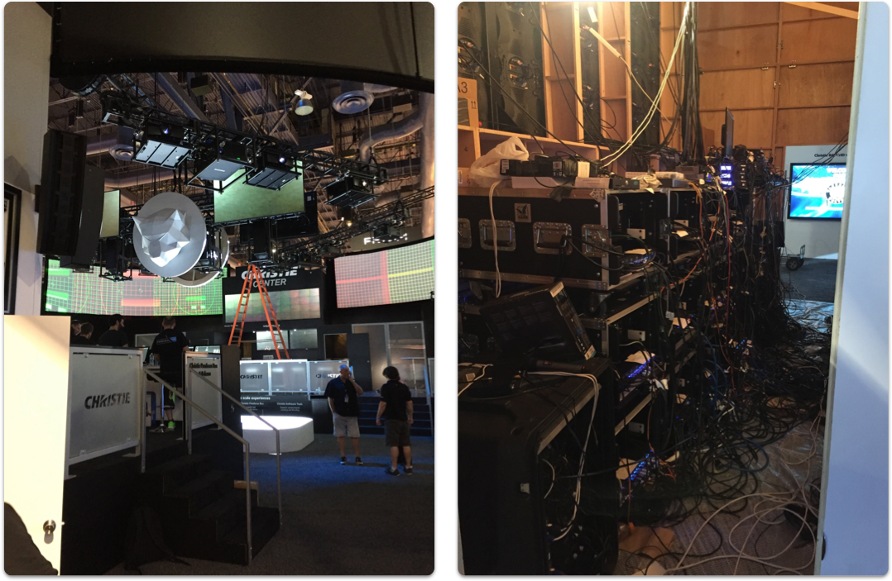
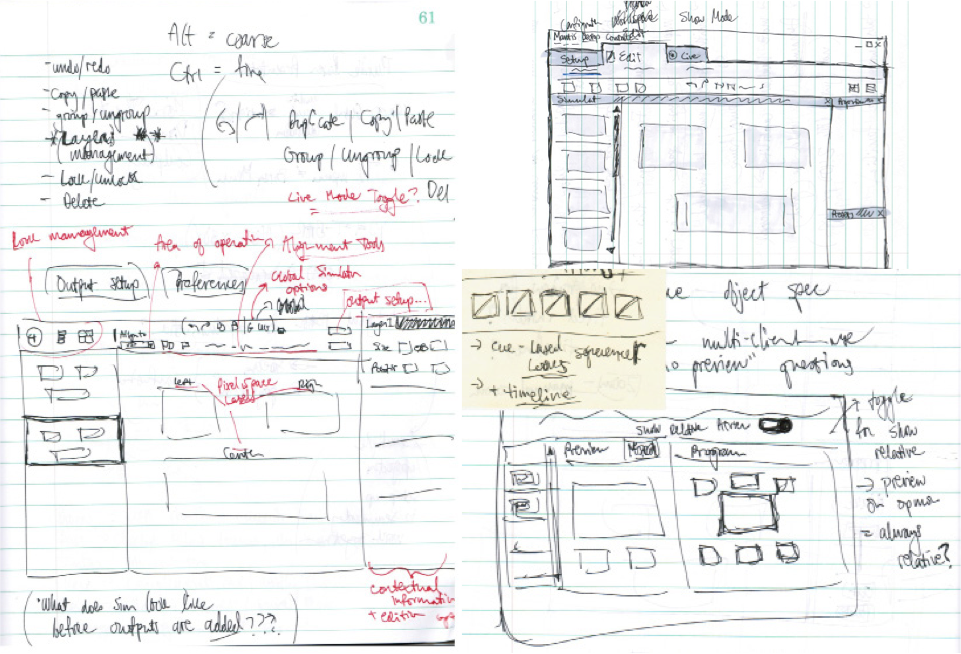
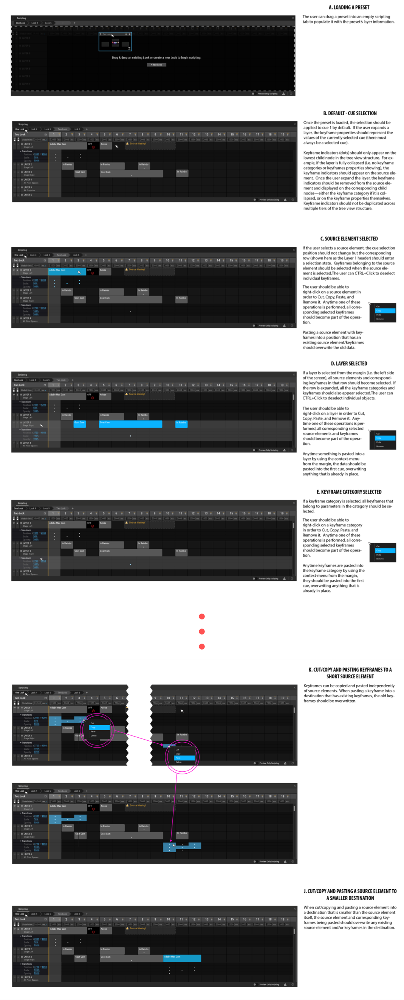
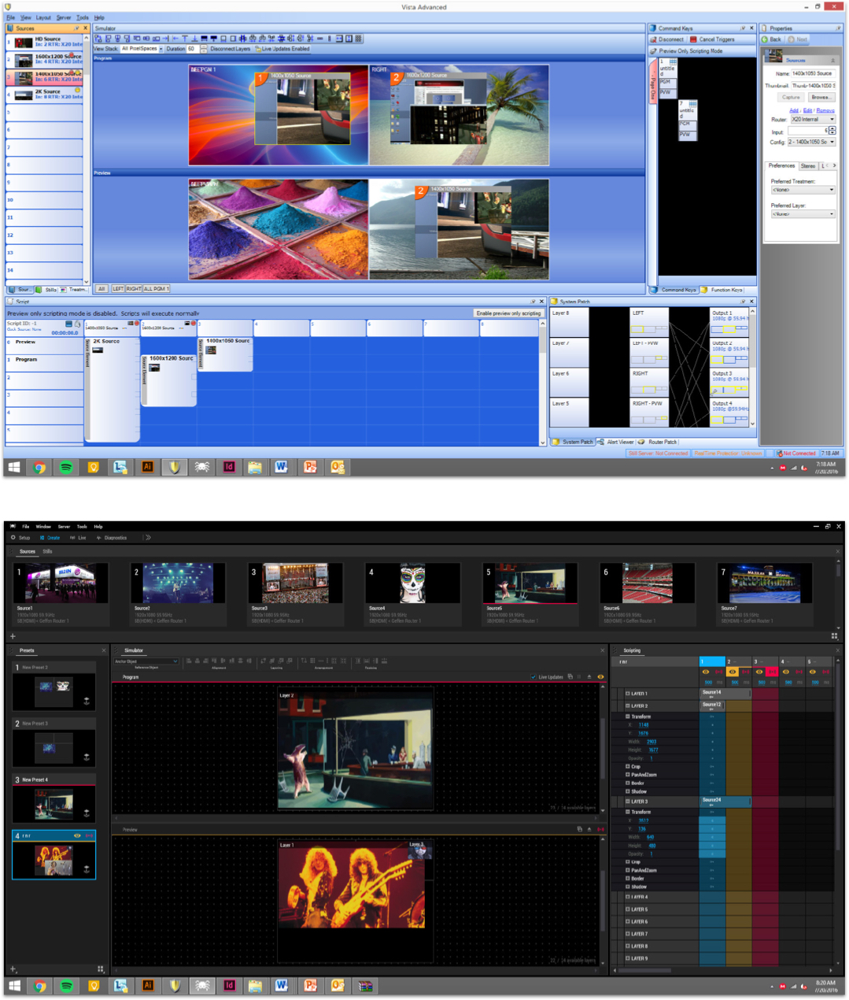

Screen processors like the Spyder X80 are powerful devices used to treat a collection of disparate screens as a single digital canvas. A good example of this is an e-sports event. The stage is made up of multiple screens: LED walls, blended projector setups, outboard monitors, etc. Screen processors allow a user to combine all of these displays and easily manage corresponding video sources (videos, cameras feeds, still images) on any screen and at any size. Users can save arrangements of sources as presets and recall them during various stages of the show. They are complex devices that manage millions of pixels and are used by multiple types of users who control not only what appears on the screens but also control other devices part of the live show system. At Christie Digital systems, I was the lead designer on the Spyder X80 project. My goal was the streamline the system, minimize complexity and the steep learning curve, and improve the usability of the desktop client – the primary control interface of the device.

Screen processors are used in various high-pressure, live event contexts such as corporate conferences (like Google I/O), rock concerts, broadcast environments (news stations), awards shows, etc. The live show mantra is “expect the unexpected” yet the operator is always expected to execute flawlessly – making a mistake means losing one’s job. What's worse – typically operators arrive to the show only one day prior. This means they are sent a schematic explaining the devices and ecosytem being used at the venue and they most remotely (usually on the plane) program everything prior.

Since the software is used to control live events, a lot of design effort that signifiers in the system are clear and unambiguous, that actions are always made intentionally, and that system feedback is transparent to the user at all times. These criteria ensure that confidence is maintained and that errors are at all costs.
Screen processors need to be inherently flexible due to their wide variety of applications. For one show, an operator may rely heavily on the automation functionality (which allows the user to program a sequence of presets on a timeline) and at other shows, it may not be used at all. One thing early one is that the UI needed to be modular and dynamic.

The next-gen Spyder software has been designed to be modular and customizable. Each major feature lives inside of its own window; any collection of windows can make up a “workspace”. Workspaces maintain the size and position of each window and support multi-monitor setups. The users are provided with default workspaces that we think cover roughly 80% of use-cases but they have the freedom to customize these and even create their own.
Early on in the design process, it was clear that much of the functionality of the legacy Spyder needed to persist in the new product. The challenge was to organize information in a way that minimized complexity and redesign the controls and feature to be aligned with mental models that users had with the world and with other software they use. The goal was to help new users learn how to use the software more easily without alienating legacy users.
For instance, the setup workflow on the old Spyder was fast but convoluted and difficult to understand, especially for new users. A trade-off was made: we took a design risk and decided to split up the setup UI into multiple components, increasing task time but also increasing learnability and flexibility. Through testing, we discovered that both new and seasoned users prefer the new workflow because it presents a clearer mental model and it offers more flexibility compared to the old paradigm.

Screen processors are most often used in various high-pressure, live event contexts. The live show mantra is “expect the unexpected” yet the operator is always expected to execute flawlessly – making a mistake means losing one’s job. Since the software is used to control live events, a lot of design effort and iteration has been dedicated to ensuring that things like buttons and icons are clear and unambiguous, that actions are always intentional, and that system feedback is transparent to the user at all times. These criteria ensure that confidence is maintained and that errors are always avoided.

Screen processors are used in various high-pressure, live event contexts such as corporate conferences (like Google I/O), rock concerts, broadcast environments (news stations), awards shows, etc. The live show mantra is “expect the unexpected” yet the operator is always expected to execute flawlessly -- making a mistake means losing one’s job. Since the software is used to control live events, a lot of design effort and iteration has been dedicated to ensuring that things like buttons and icons are clear and unambiguous, that actions are always intentional, and that system feedback is transparent to the user at all times. These criteria ensure that confidence is maintained and that errors are always avoided.
MY CONTRIBUTIONS